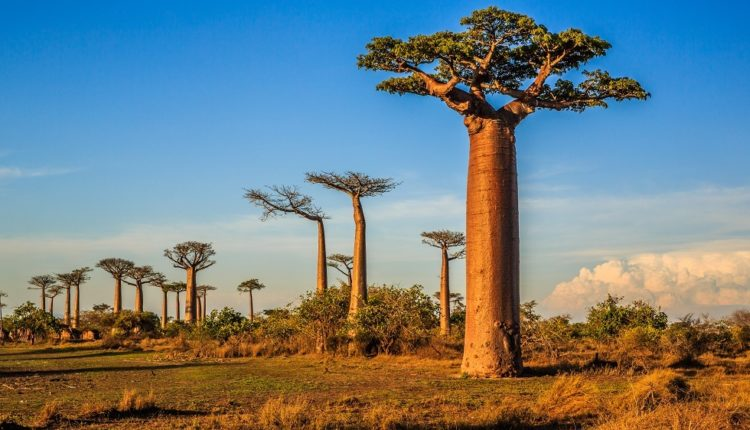

À Madagascar, le tourisme redevient enfin porteur
Cette année, la Grande Île retrouve enfin des flux touristiques acceptables. Et, pour donner un réel coup d’accélérateur à la relance post-Covid, autorités et professionnels déploient de nouvelles stratégies afin d’attirer plus de visiteurs sur leurs terres encore largement méconnues.
Comment Madagascar compte relancer son tourisme
L’Echo touristique : comment se porte le tourisme à Madagascar ? Joel Randriamandrato : Nous avons de nouvelles ambitions pour le tourisme à Madagascar (le ministre a été nommé suite à l’élection du président Andry Rajoelina, le 8 janvier 2019, ndlr). Nous n’avons jamais réussi à reproduire notre performance de 2008 (375 000 touristes, NDLR). En 2018, nous avons accueilli environ 300 000 visiteurs étrangers, dont 40% de Français. 44% de ces touristes hexagonaux visitent notre pays par l’intermédiaire d’un voyagiste. Pourtant, nous sommes persuadés de pouvoir faire mieux. Madagascar a de réels atouts, parmi lesquels le plus précieux d’entre eux : notre patrimoine naturel. Mais nous devons diversifier notre offre.